Prises de parole & interventions
Les prises de parole sont distinguées des simples participations afin de rendre lisible la nature de chaque contribution.

Lomé, Abidjan, Katowice, Monaco, Marseille, Porquerolles. Des sommets régionaux aux sentiers littoraux, des sièges d’administration aux amphithéâtres, ce parcours s’est construit dans des lieux où l’on discute du droit de la mer, du littoral et de leur avenir.


De la sécurité maritime en Afrique de l’Ouest aux aires marines protégées de Méditerranée, ces rendez-vous dessinent une même ligne : comprendre comment le droit, les institutions et les territoires composent avec la mer. Ils se répondent d’une année à l’autre.
Un sommet régional, deux conférences africaines sur la gouvernance de la mer, une COP climat, un atelier en aire marine protégée, un entretien de recherche. Chacun ouvre sur sa fiche, son contexte et, quand elles existent, ses photographies.
Le premier grand rendez-vous africain du parcours. Participation aux espaces parallèles, en octobre 2016 : c’est là que se noue l’attention portée à la sûreté maritime et à la gouvernance régionale.
2017 · AbidjanDialogue des politiques sur la gouvernance des ressources et activités maritimesTrois jours, du 21 au 23 juin 2017, sur la gouvernance des ressources maritimes et le développement durable en Afrique. Dix photographies documentent cette participation.
2017 · AbidjanCOP12 de la Convention d’AbidjanDu 27 au 31 mars 2017, la conférence des Parties au traité régional de protection du milieu marin ouest-africain. Le droit de l’environnement marin vu depuis son échelle régionale.
2018 · KatowiceCOP24 / COY14La seule sortie du cadre strictement maritime : une COP climat, abordée depuis le littoral, la jeunesse et la responsabilité environnementale.
2024 · Port-CrosAtelier régional MedPAN sur le tourisme dans les aires marines protégéesLe basculement vers la Méditerranée. Un atelier de terrain entre La Londe-les-Maures, Porquerolles et le Parc national de Port-Cros, sur le tourisme et la gestion des usages en aire marine protégée.
2024 · PROTEUSEntretien officiel avec l’équipe de rechercheUn entretien publié le 20 août 2024 sur le carnet du projet, où la trajectoire est restituée par un tiers : droit, mer, géographie, prospective et conflits d’usage.
Les prises de parole sont distinguées des simples participations afin de rendre lisible la nature de chaque contribution.
Colloques, séminaires, conférences, écoles d'été et journées d'étude suivis dans un cadre académique ou scientifique.
Sommet, dialogue politique, ateliers, journées mondiales et rencontres liées aux politiques publiques, à la mer et au littoral.
Formats courts suivis pour consolider des compétences en environnement marin, médiation, propriété intellectuelle ou entrepreneuriat.
Espaces Pépite, INNOV'ACTIONS, Emerging Valley, Pass Entreprendre et rencontres reliées à l'innovation et à l'économie bleue.
Les photographies et traces documentaires situent les événements, les espaces fréquentés et les séquences de travail sans attribuer de fonction ou de relation non établie.
Les prises de parole ne sont isolées que lorsque le rôle est explicite. Les adhésions et plateformes sont présentées selon leur nature exacte.
La Société Française de Prospective et l’Association Francophone Internationale de Médiation figurent parmi les cadres documentés qui prolongent le parcours autour de la prospective et de la médiation.
OceanExpert et Ocean Decade Network ouvrent sur des espaces internationaux de connaissance, de coopération et de veille autour de l’océan.
Sommet de Lomé, accord du Cap, Convention d'Abidjan, WACA, journées environnementales et Dialogue des politiques à Abidjan structurent un premier ensemble maritime, institutionnel et environnemental.
COP24 / COY14, colloque final Human Sea, stage auprès du Secrétariat permanent du Comité interministériel de l’Action de l’État en Mer autour des enjeux du droit international de la mer dans le Golfe de Guinée, contentieux de la délimitation maritime africaine, économie bleue dans le Golfe de Guinée et arbitrage forment un deuxième ensemble juridique et international.
ERSUMA/OHADA, Euromaritime, colloque sûreté maritime et travaux autour de l'obligation de protéger le milieu marin prolongent les liens entre droit, sécurité, innovation et environnement.
PROTEUS, MedPAN, Forum Mouillage Méditerranée, Pépite Provence, Emerging Valley, INDEMER et Académies de marine européennes inscrivent la trajectoire dans des espaces méditerranéens, scientifiques et entrepreneuriaux.
Parcourir les photographies et repères qui replacent ces événements dans leur contexte.
AxesRelier les participations aux orientations structurantes du site OBY.
ExplorerParcourir les sujets, ressources et liens intellectuels associés.
VeilleSuivre quelques repères institutionnels et académiques liés aux mêmes domaines.
Cette sélection rassemble des sources officielles exactes, des traces institutionnelles utiles et quelques supports publics associés aux événements déjà cités. Ces liens situent les cadres de participation sans transformer une présence à un événement en intervention ou en partenariat.
Sommet de Lomé, accord du Cap, Dialogue des politiques et Journée mondiale de la mer structurent la lecture institutionnelle maritime.
Convention d'Abidjan, WACA, COP24 / COY14 et PNUD océans relient climat, littoral et action publique.
INDEMER, PROTEUS, MedPAN, Forum Mouillage et Aix-Marseille situent les usages de la mer dans des terrains méditerranéens.
ERSUMA / OHADA, arbitrage, médiation administrative et délimitation maritime montrent l'attention portée aux modes de règlement.
Les terrains, visites institutionnelles et voyages d’étude permettent d’ancrer le parcours OBY dans des lieux, des paysages, des usages et des institutions. De la Méditerranée au Golfe de Guinée, ces expériences relient géographie littorale, droit de la mer, gouvernance maritime, environnement, aménagement et observation concrète des vulnérabilités.
Île de Porquerolles dans le cadre de l'atelier régional MedPAN / Parc national de Port-Cros ; Parc national des Calanques, Madrague de Montredon, Les Goudes et rade sud de Marseille dans le cadre du M2 COAST et de la GIZC ; Fréjus / Saint-Aygulf autour de la plage, du barrage de Malpasset et du port antique ; L'Estaque avec M. Morhange ; Parc naturel régional du Luberon comme terrain d'observation territoriale et environnementale.
Visite de la DIRM Méditerranée et de FNE Marseille dans le cadre de l'UE GIZC du M2 COAST ; stage et immersion institutionnelle auprès du SEP-CIM AEM / Primature de Côte d’Ivoire à Abidjan ; stage international avec bourse au Tribunal international du droit de la mer à Hambourg ; visites institutionnelles associées aux Cours d'hiver de l'Académie de droit international de La Haye.
Participation à la COY / COP24 à Katowice dans un cadre climat, jeunesse, gouvernance environnementale et coopération internationale ; visite de terrain à Yamoussoukro dans le cadre du séminaire JICA / INFJ ; participation aux side events du Sommet de Lomé sur la sécurité, la sûreté maritime et le développement en Afrique.
Immersions institutionnelles, formations spécialisées, adhésions et responsabilités associatives : ces cadres ne relèvent pas d’une intervention publique, mais ils situent le parcours dans des institutions et des communautés professionnelles durables.
Stage de trois mois au Tribunal international du droit de la mer, à Hambourg, effectué avec une bourse et en appui au Service juridique du Tribunal. Le stage a couvert des recherches de fond, le suivi de deux affaires de mesures conservatoires et la présence aux audiences.
Le Tribunal international du droit de la mer est la juridiction créée par la convention des Nations unies sur le droit de la mer pour connaître des différends relatifs à son interprétation et à son application. Il siège à Hambourg et statue notamment sur les demandes de mesures conservatoires, procédures d’urgence destinées à préserver les droits des parties ou à empêcher un dommage grave au milieu marin.
Le stage, d’une durée de trois mois, s’est déroulé au sein du Service juridique du Tribunal, sous la forme de recherches de fond, avec le suivi de deux affaires de mesures conservatoires et la présence aux audiences correspondantes. Il s’est accompagné d’un travail personnel consacré à la préservation de la zone côtière en droit ivoirien.
Ce stage a permis de travailler au contact direct d’une juridiction internationale spécialisée : conduire des recherches de fond pour son Service juridique, suivre deux affaires de mesures conservatoires de leur dépôt à leur audience, observer la manière dont une juridiction internationale traite l’urgence maritime, et rapporter ces méthodes à un objet propre — la préservation de la zone côtière en droit ivoirien.
Thématiques associées : droit international de la mer · règlement des différends · mesures conservatoires · protection du littoral
Sources officielles : Lettre d’information du Tribunal, 2019/3 · version anglaise
Participation aux Cours d’hiver 2020 de l’Académie de droit international de La Haye, sur sélection et avec bourse. Les Cours d’hiver sont une session intensive de droit international dispensée par des universitaires et des praticiens de plusieurs traditions juridiques.
L’Académie de droit international de La Haye, installée au Palais de la Paix, organise chaque année des sessions d’enseignement intensif de droit international public et privé. L’admission se fait sur candidature, et une partie des auditeurs est retenue au titre d’une bourse.
La session 2020 a été suivie comme auditeur retenu au titre d’une bourse.
Cette session a permis de consolider les bases générales du droit international dans un cadre d’enseignement intensif et international, et de replacer les questions de droit de la mer déjà travaillées dans l’architecture d’ensemble du droit international public.
Thématiques associées : droit international public · formation spécialisée · règlement des différends
Sources officielles : Archives des programmes de l’Académie
Responsabilités exercées dans un cadre associatif juridique, sans assimilation à une fonction institutionnelle publique.
Adhésion 2025 à la Société Française de Prospective, association qui réunit praticiens, chercheurs et institutions autour des méthodes de prospective. Il s’agit d’une adhésion à un espace de dialogue et de travaux, non d’un mandat.
Le parcours suit par ailleurs les travaux de l’Association de Géographes Français, cadre documenté qui prolonge l’attention portée aux territoires et aux vulnérabilités littorales.
La Société Française de Prospective structure en France la réflexion sur les méthodes d’anticipation : construction de scénarios, exploration des futurs possibles et usage de la prospective dans la décision publique et territoriale.
L’adhésion porte sur l’année 2025. Elle n’emporte ni participation aux commissions de l’association, ni fonction en son sein.
Cette adhésion rattache le parcours à un espace organisé de travaux prospectifs, en prolongement direct du travail mené sur les scénarios méditerranéens et les trajectoires d’adaptation des territoires littoraux.
Thématiques associées : prospective · scénarios · anticipation · territoires
Sources officielles : Société Française de Prospective
Adhésion à l’Association Francophone Internationale de Médiation, réseau international qui réunit praticiens, formateurs et institutions de la médiation dans l’espace francophone et anime des travaux communs. Il s’agit d’une adhésion à un réseau : elle ne confère ni mission, ni mandat, ni qualité de médiateur en exercice, et vient prolonger les cadres de formation déjà suivis en médiation et en négociation.
L’AFIM réunit, à l’échelle francophone, des acteurs de la médiation et du règlement amiable des différends, et anime des travaux et des assemblées de membres.
L’adhésion porte sur l’année 2026 et donne accès aux communications adressées aux membres. Elle ne confère aucune qualité de médiateur en exercice, d’arbitre, ni aucune fonction au sein de l’association.
Cette adhésion rattache le parcours à un réseau international de praticiens de la médiation et donne accès à ses travaux, en prolongement des cadres de formation déjà suivis en médiation et en négociation.
Thématiques associées : médiation · règlement amiable des différends · réseau francophone · négociation
Sources officielles : Association Francophone Internationale de Médiation
Inscription sur OceanExpert, annuaire international des professionnels et des institutions liés aux sciences marines et aux ressources aquatiques, tenu dans l’écosystème de la Commission océanographique intergouvernementale de l’UNESCO. L’inscription rend le parcours identifiable dans cet annuaire de référence ; elle ne constitue ni une participation institutionnelle, ni une contribution active, ni une affiliation.
OceanExpert recense les personnes et les institutions actives dans les sciences de l’océan à l’échelle mondiale, et sert d’annuaire de référence pour les mises en relation scientifiques et institutionnelles.
Le compte a été activé le 13 mai 2024. L’inscription ne constitue ni une participation institutionnelle, ni une contribution active, ni une affiliation.
Cette inscription rend le parcours identifiable dans l’annuaire international de référence des sciences de l’océan, en cohérence avec les axes portant sur le littoral, la gouvernance maritime et les réseaux scientifiques internationaux.
Thématiques associées : sciences de l’océan · réseaux scientifiques internationaux · gouvernance maritime
Sources officielles : OceanExpert
Inscription, le 2 mai 2024, au réseau de la Décennie des sciences océaniques pour le développement durable, porté par la Commission océanographique intergouvernementale de l’UNESCO. Il s’agit d’une adhésion historique, dont l’état actuel n’est pas présenté ici comme acquis.
La Décennie des sciences océaniques pour le développement durable (2021-2030) est un cadre des Nations unies destiné à mobiliser la communauté scientifique et les acteurs de l’océan autour d’objectifs communs. Son réseau met en relation les personnes et les structures qui s’y rattachent.
L’inscription date du 2 mai 2024. Elle est présentée comme une adhésion historique : rien n’est affirmé ici sur son caractère encore actif.
Cette inscription a rattaché le parcours à un cadre onusien de coopération scientifique sur l’océan, en cohérence avec les axes portant sur la gouvernance de l’océan, l’Afrique, l’Europe, la Méditerranée et le Golfe de Guinée.
Thématiques associées : sciences océaniques · coopération internationale · gouvernance de l’océan · UNESCO
Sources officielles : Décennie des sciences océaniques
Participation reliée à la gouvernance internationale des océans, au droit de la mer, aux institutions maritimes et aux dynamiques de coopération.
Participation au colloque de l’Institut du droit économique de la mer consacré aux usages contemporains de la mer, à Monaco les 8 et 9 mai 2025. Le colloque portait sur les activités qui se déploient aujourd’hui en mer et sur les cadres juridiques qui les encadrent.
L’INDEMER est un institut monégasque spécialisé dans le droit économique de la mer, qui réunit chaque année juristes, institutions et praticiens autour d’une question précise du droit maritime. L’édition 2025 portait sur les usages contemporains de la mer.
La participation porte sur les deux journées du colloque ; vingt photographies documentent la séquence.
Ces deux journées ont permis d’approfondir les cadres juridiques applicables aux usages nouveaux ou en recomposition de la mer, et de suivre la manière dont un institut spécialisé articule droit économique, droit de l’environnement et pratique des acteurs maritimes.
Thématiques associées : droit économique de la mer · usages maritimes · droit international de la mer · Méditerranée
Sources officielles : Colloque INDEMER des 8 et 9 mai 2025

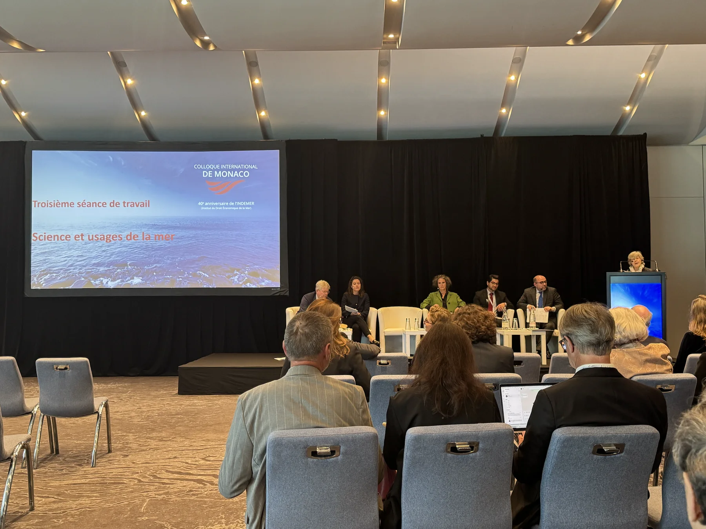
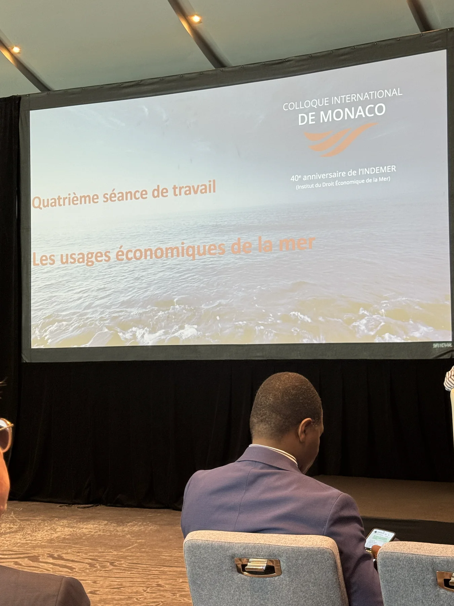
Participation au colloque réunissant les Académies de marine européennes à l’École nationale supérieure maritime de Marseille, les 25 et 26 mars 2025. Organisé dans la perspective de la Conférence des Nations unies sur l’océan, il portait sur la gouvernance maritime, les obligations climatiques des États au regard du droit de la mer et les cultures maritimes européennes.
Les Académies de marine européennes réunissent des institutions nationales consacrées aux affaires maritimes. Le colloque de Marseille se tenait dans la perspective de la Conférence des Nations unies sur l’océan et portait sur la gouvernance maritime, les obligations climatiques des États et les cultures maritimes européennes.
La participation porte sur les deux journées du colloque, dont les travaux font l’objet d’un support vidéo officiel.
Ce colloque a permis de confronter des lectures européennes de la gouvernance maritime à une trajectoire construite d’abord sur l’Afrique de l’Ouest et la Méditerranée : suivre le traitement des obligations climatiques des États au regard du droit de la mer, et observer la façon dont les institutions maritimes européennes préparent une échéance multilatérale.
Thématiques associées : gouvernance maritime · obligations climatiques des États · droit de la mer · Europe · UNOC
Sources officielles : Académie de marine · support vidéo officiel

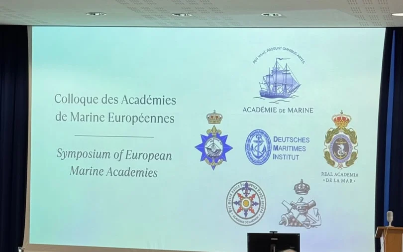
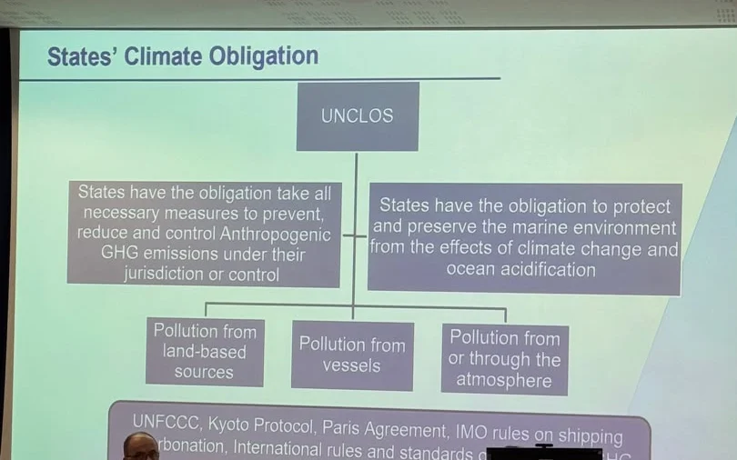
Participation au colloque de l’Institut du droit économique de la mer consacré à l’obligation faite aux États de protéger et de préserver le milieu marin, à Monaco les 12 et 13 mai 2023, à l’occasion des quarante ans de la convention des Nations unies sur le droit de la mer.
L’article 192 de la convention de Montego Bay pose une obligation générale de protection et de préservation du milieu marin. Quarante ans après son adoption, le colloque portait sur ce que cette obligation impose réellement aux États, et sur la façon dont juristes et scientifiques de l’océan en établissent ensemble le contenu.
La participation porte sur les deux journées du colloque.
Ce colloque a permis d’approfondir le contenu juridique concret d’une obligation souvent citée en principe : identifier ce qu’elle impose, ce qu’elle laisse à l’appréciation des États, et comment les sciences de l’océan viennent en préciser la mesure dans un dialogue direct entre disciplines.
Thématiques associées : droit de la mer · protection du milieu marin · responsabilité des États · convention de Montego Bay
Participation à un cadre spécialisé sur la sûreté maritime et les enjeux stratégiques liés aux espaces maritimes.
Stage de quatre mois effectué auprès du Secrétariat permanent du Comité interministériel de l’Action de l’État en Mer de Côte d’Ivoire, du 1er avril au 31 juillet 2020. Le stage a porté sur les enjeux liés à l’Action de l’État en Mer et à l’application du droit international de la mer dans le Golfe de Guinée.
L’Action de l’État en Mer désigne l’ensemble des missions que la puissance publique exerce en mer — surveillance, police, sauvetage, protection de l’environnement, contrôle des pêches — et qui relèvent de plusieurs ministères à la fois. En Côte d’Ivoire, un comité interministériel et son secrétariat permanent assurent la coordination de ces missions.
Le stage s’est déroulé au sein de ce secrétariat permanent, sur quatre mois, avec des travaux transmis tout au long de la période et des séquences de travail et de présentation documentées.
Le stage a placé l’analyse du droit de la mer au contact d’un dispositif gouvernemental de coordination maritime. Cette immersion de quatre mois a donné une dimension institutionnelle et opérationnelle aux enjeux étudiés : comprendre comment l’action publique en mer s’organise dans un cadre interministériel, et comment les questions de gouvernance maritime et d’application du droit de la mer se posent concrètement dans le contexte ivoirien et, plus largement, dans le Golfe de Guinée.
Thématiques associées : droit international de la mer · Action de l’État en Mer · gouvernance maritime · sécurité maritime · Golfe de Guinée

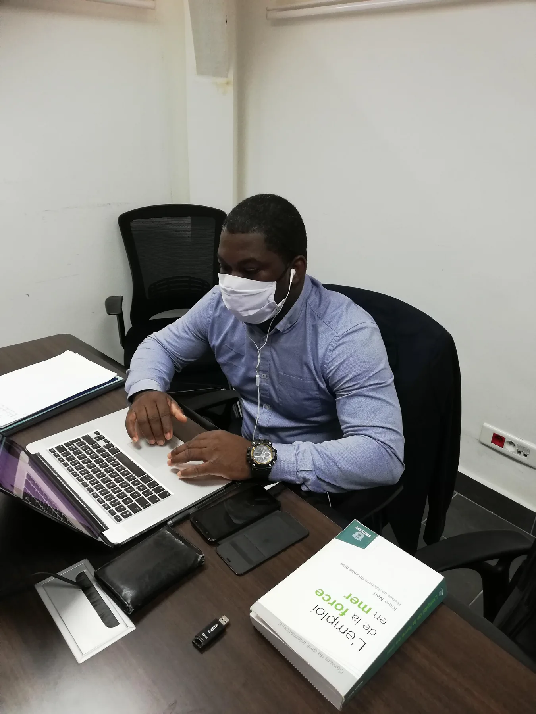
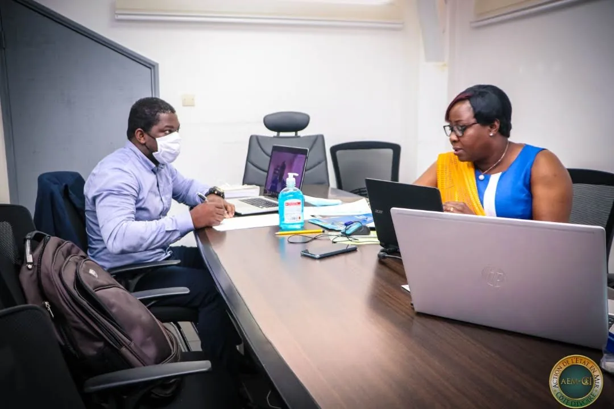
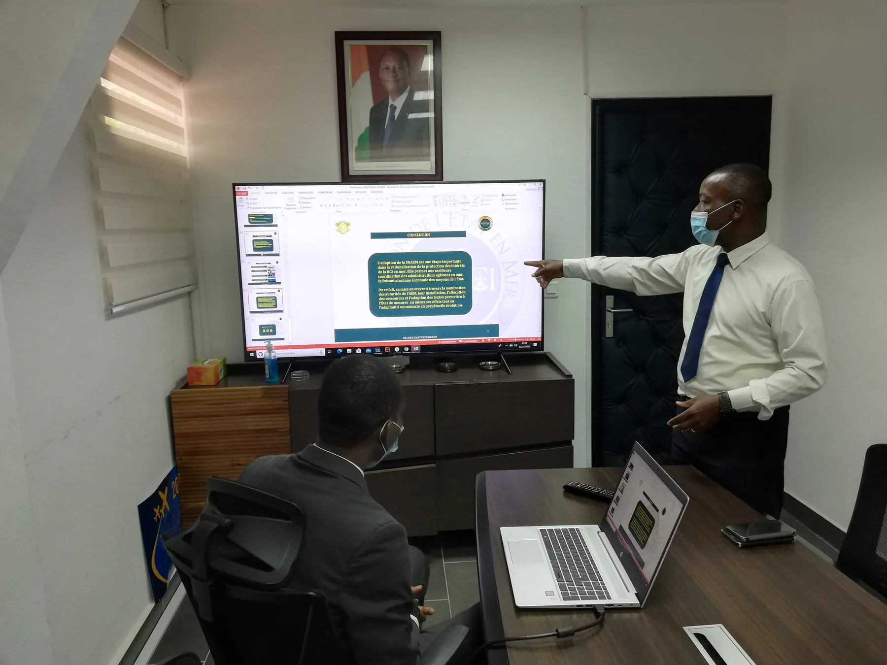
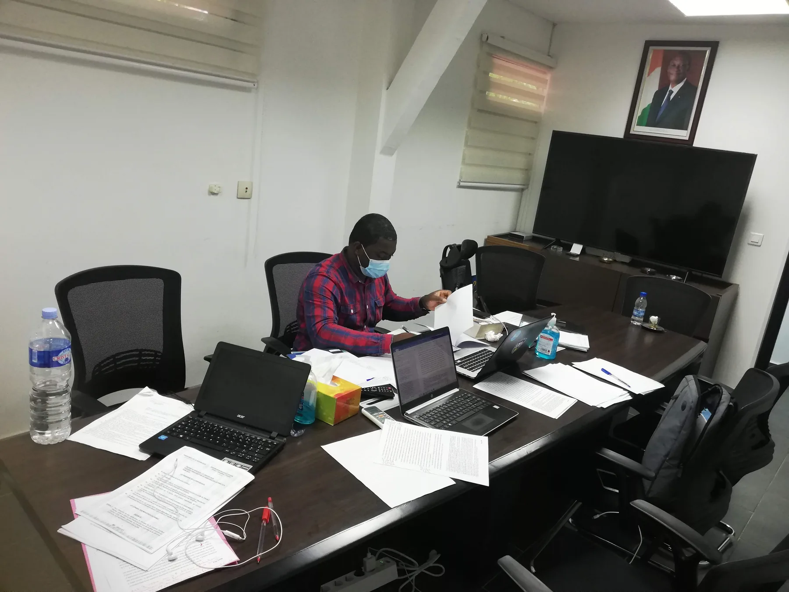
Participation au colloque final international du programme de recherche Human Sea, consacré à la transformation du droit de l’océan sous l’exigence de conservation de l’environnement marin. L’attestation officielle de présence couvre les deux jours et demi du colloque, soit 16 h 30.
Human Sea était un programme de recherche international porté par l’Université de Nantes sur le développement des activités humaines en mer et son encadrement juridique. Son colloque final, en octobre 2018, portait sur la manière dont l’exigence de conservation du milieu marin déplace les catégories classiques du droit de l’océan.
La présence couvre les deux jours et demi du colloque, soit 16 h 30 de travaux.
Ces 16 h 30 ont permis de suivre, dans un cadre scientifique international, la manière dont la conservation du milieu marin reconfigure le droit de l’océan : confronter le droit de la mer classique aux exigences environnementales, et relier des travaux juridiques à des questions écologiques traitées par des chercheurs de plusieurs disciplines.
Thématiques associées : droit de la mer · conservation du milieu marin · environnement marin · recherche juridique internationale
Sources officielles : Médiathèque du programme Human Sea

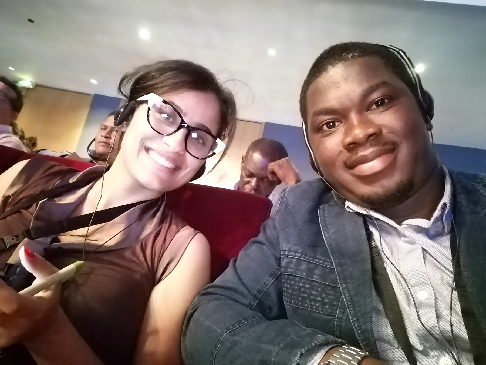
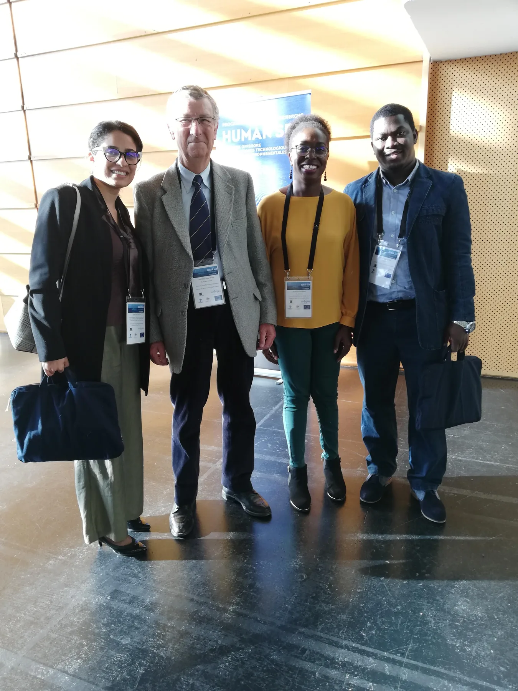
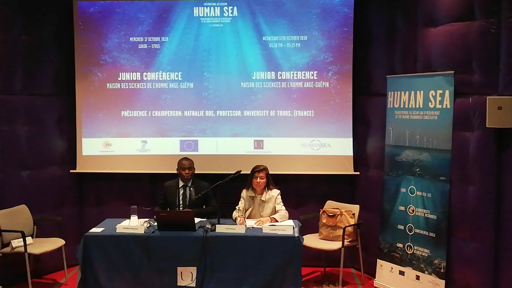
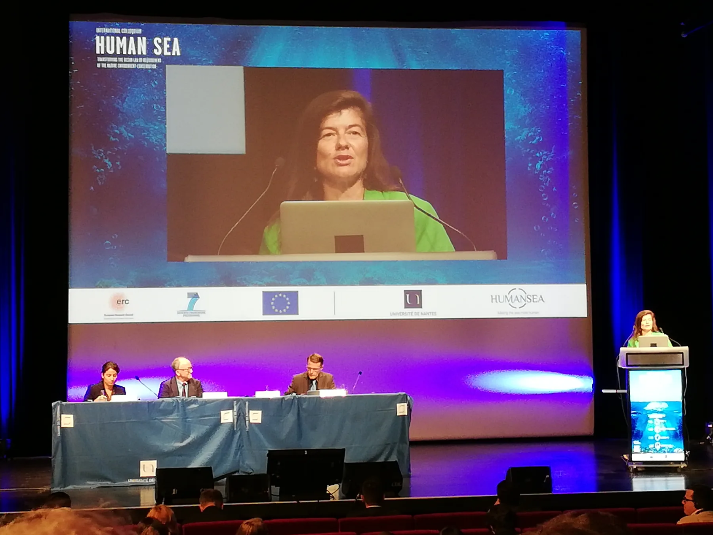
Participation, sur trois jours, au Dialogue des politiques consacré à la gouvernance des ressources et des activités maritimes pour le développement durable en Afrique, organisé à Abidjan du 21 au 23 juin 2017 par la Division du renforcement des capacités de la Commission économique pour l’Afrique.
Le Dialogue des politiques réunit administrations, organisations régionales et experts autour d’une même question de politique publique. L’édition d’Abidjan portait sur la gouvernance des ressources et des activités maritimes : pêche, transport, ressources extractives, protection des milieux et articulation avec les objectifs de développement durable du continent.
La participation couvre les trois journées de travaux ; dix photographies documentent la séquence.
Ces trois jours ont permis de confronter une lecture juridique des espaces maritimes à un dialogue de politiques publiques africain : voir comment la gouvernance des ressources, les activités maritimes et le développement durable sont discutés ensemble par les administrations concernées, et comment une question de droit de la mer se traduit en priorités d’action publique à l’échelle continentale.
Thématiques associées : gouvernance maritime · ressources marines · développement durable · politiques publiques · Afrique
Sources officielles : Note conceptuelle officielle (CEA)

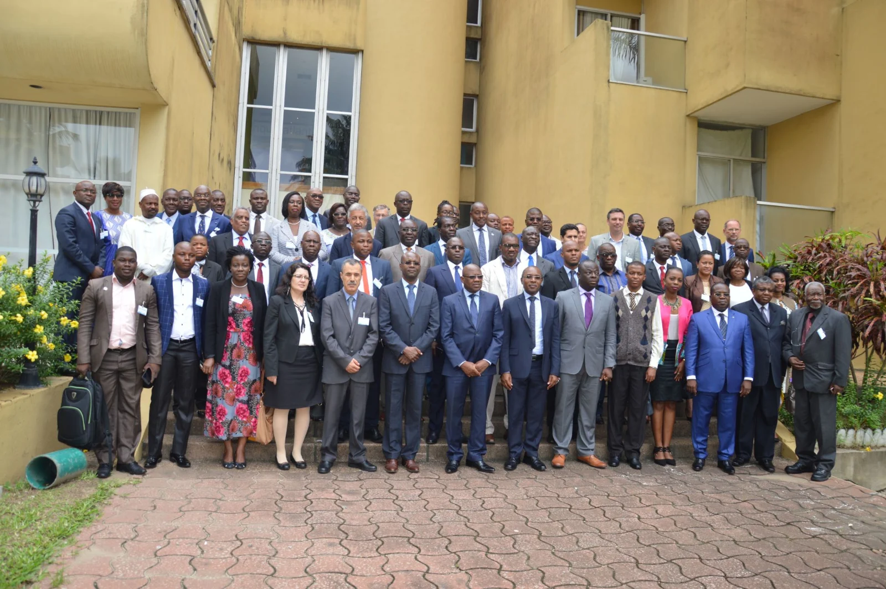
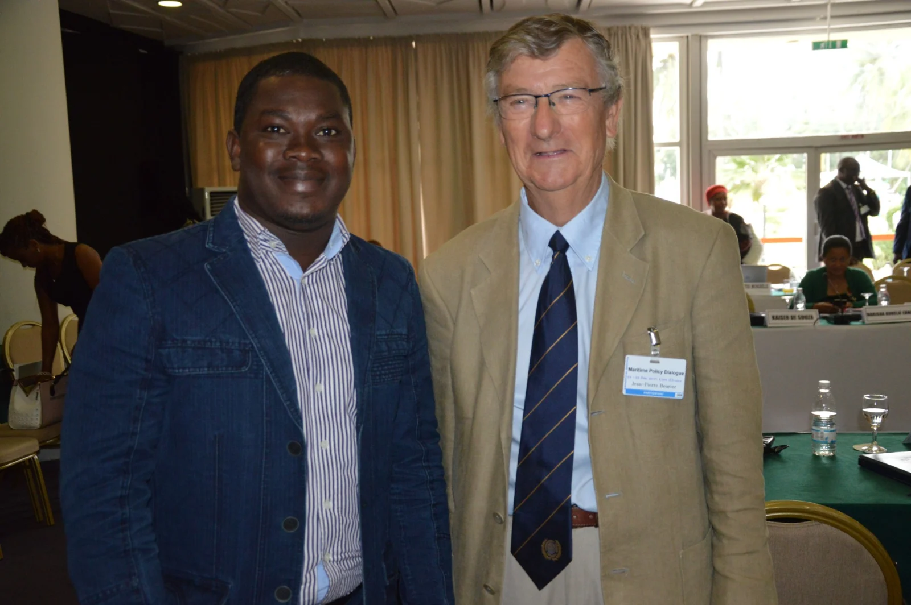
Participation à la douzième Conférence des Parties à la Convention d’Abidjan, du 27 au 31 mars 2017. Cette conférence réunit les États parties au traité régional de coopération pour la protection et la mise en valeur du milieu marin et côtier de la côte atlantique de l’Afrique.
La Convention d’Abidjan est le cadre régional de protection du milieu marin et côtier pour l’Afrique de l’Ouest, du Centre et du Sud, placé sous l’égide du Programme des Nations unies pour l’environnement. Sa Conférence des Parties adopte les décisions et les protocoles qui engagent les États signataires.
La participation couvre les cinq jours de la COP12, séances plénières et espaces scientifiques compris ; dix-huit photographies documentent la séquence.
La COP12 a permis d’observer le fonctionnement concret d’une conférence des Parties régionale : suivre les séances plénières et le travail des délégations, mesurer l’articulation entre négociation intergouvernementale et apports scientifiques — dont les travaux présentés sur la gestion des macroalgues sargasses dans les eaux ivoiriennes — et situer le droit de l’environnement marin à son échelle régionale.
Thématiques associées : droit de l’environnement marin · milieu marin et côtier · gouvernance régionale · Afrique de l’Ouest
Sources officielles : Compte rendu officiel de la COP12 · Convention d’Abidjan (PNUE)

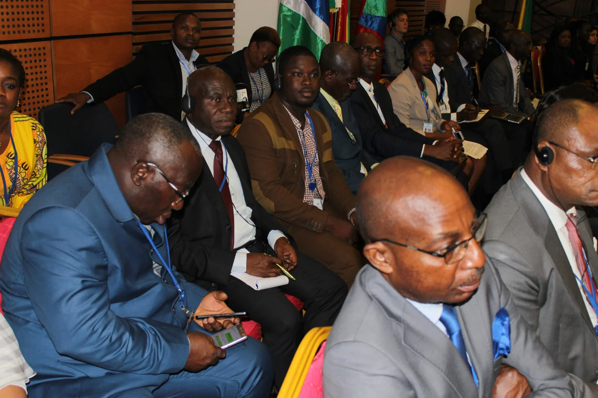
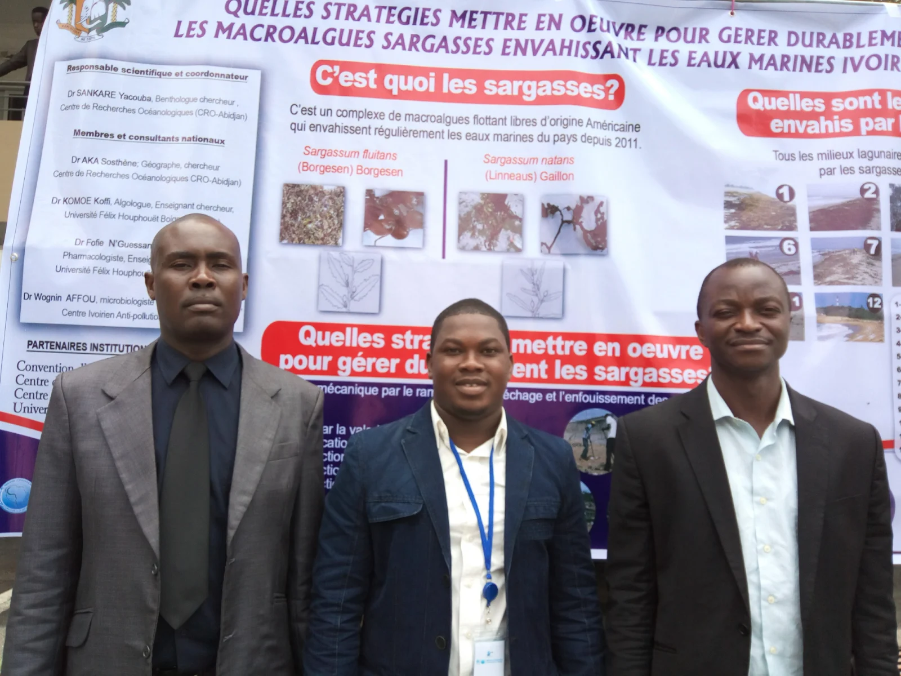
Participation à un atelier reliant océans, engagement international et priorités institutionnelles ivoiriennes.
Participation au séminaire régional consacré à l’accord du Cap de 2012, tenu au Port autonome d’Abidjan du 12 au 16 décembre 2016. Ce séminaire portait sur les normes de sécurité applicables aux navires de pêche et sur les conditions de leur mise en œuvre en Afrique de l’Ouest.
L’accord du Cap de 2012, adopté sous l’égide de l’Organisation maritime internationale, fixe des normes de sécurité pour les navires de pêche : construction, équipements, conditions de travail à bord. Son entrée en vigueur suppose que les États en ratifient les termes et adaptent leur droit interne, ce à quoi étaient consacrés les séminaires régionaux.
La participation couvre la semaine de travaux, dans un cadre institutionnel réunissant administrations maritimes et acteurs de la filière.
Le séminaire a permis d’observer comment un instrument international de sécurité maritime se traduit en obligations concrètes pour les États et pour une filière : mesurer l’écart entre la norme adoptée à l’OMI et les conditions réelles de la pêche ouest-africaine, et suivre les mécanismes de ratification et de mise en œuvre discutés entre administrations.
Thématiques associées : sécurité maritime · pêche · Organisation maritime internationale · droit international de la mer · Afrique de l’Ouest
Sources officielles : Organisation maritime internationale

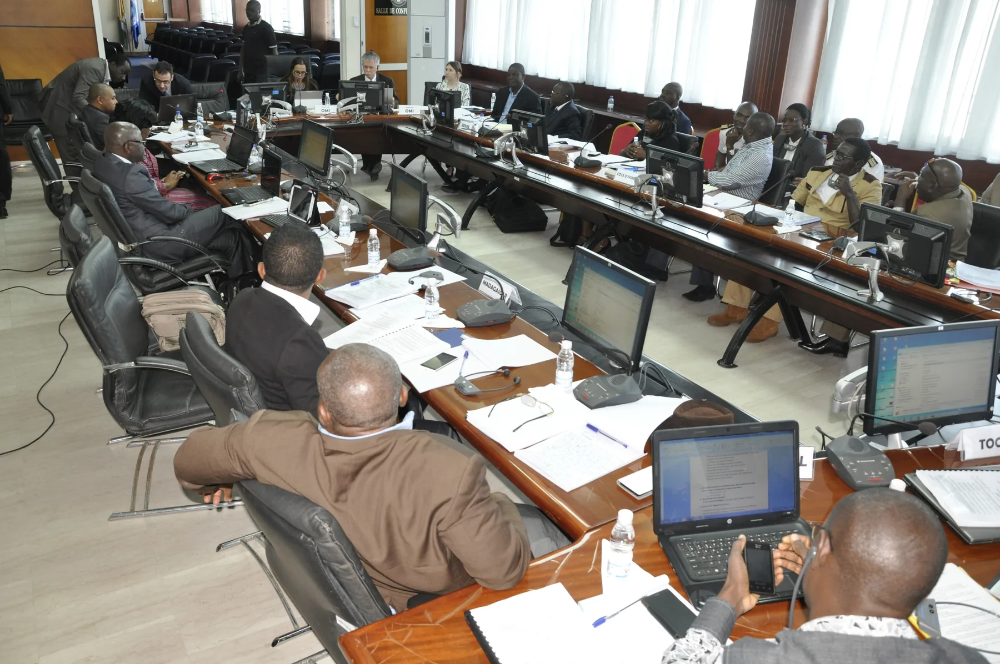
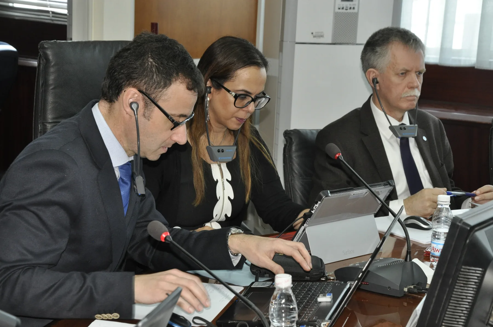
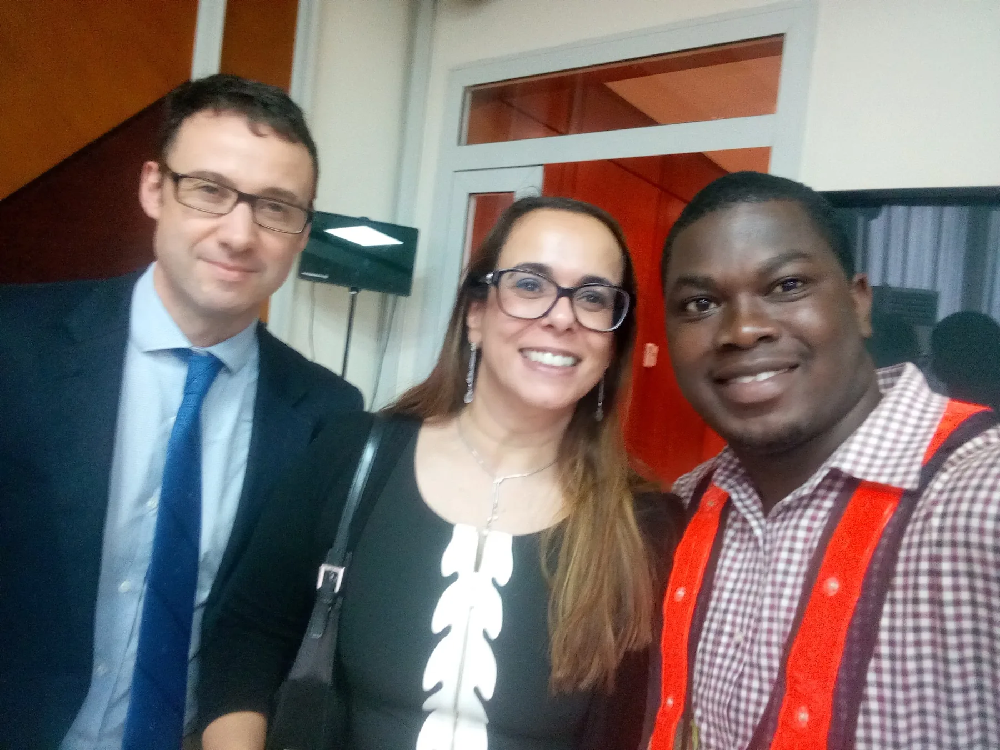
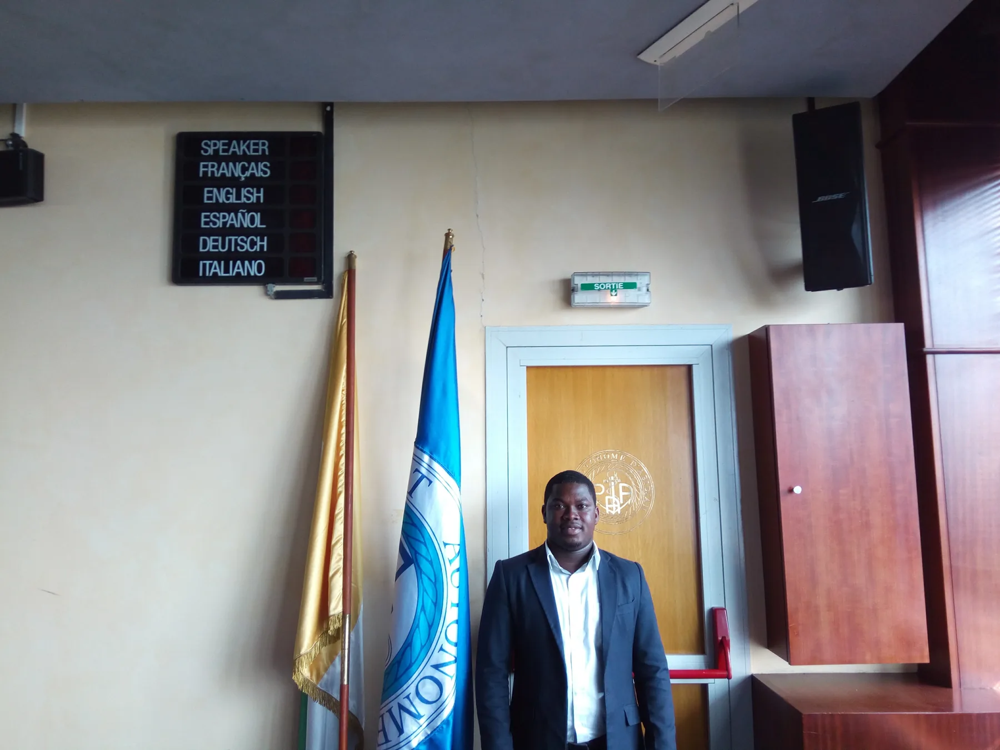
Participation aux événements parallèles du sommet extraordinaire de l’Union africaine consacré à la sécurité et à la sûreté maritimes et au développement en Afrique, tenu à Lomé en octobre 2016. Ce sommet a abouti à l’adoption de la Charte de Lomé.
Le sommet extraordinaire de Lomé a réuni les chefs d’État et de gouvernement africains autour d’un même texte, la Charte africaine sur la sécurité et la sûreté maritimes et le développement, qui relie piraterie, pêche illicite, pollution, transport maritime et économie bleue dans un cadre continental unique.
La participation porte sur les événements parallèles du sommet, où sont débattus les volets sectoriels — notamment les femmes du secteur maritime africain et les armateurs africains. Elle ne comporte aucune fonction de délégation ni de négociation.
Ce premier grand rendez-vous africain a permis de saisir comment un cadre continental relie sécurité maritime, sûreté, développement et économie bleue autour d’un même texte, et d’identifier les acteurs — administrations, organisations régionales, filières — qui portent ces sujets. Des contacts noués à cette occasion se sont prolongés après le sommet.
Thématiques associées : sûreté maritime · sécurité maritime · Charte de Lomé · économie bleue · Union africaine
Sources officielles : Sommet extraordinaire de l’Union africaine · Événement parallèle de l’Union africaine

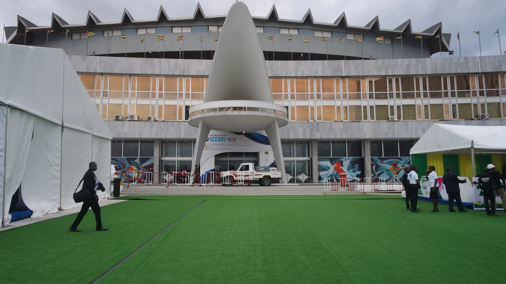
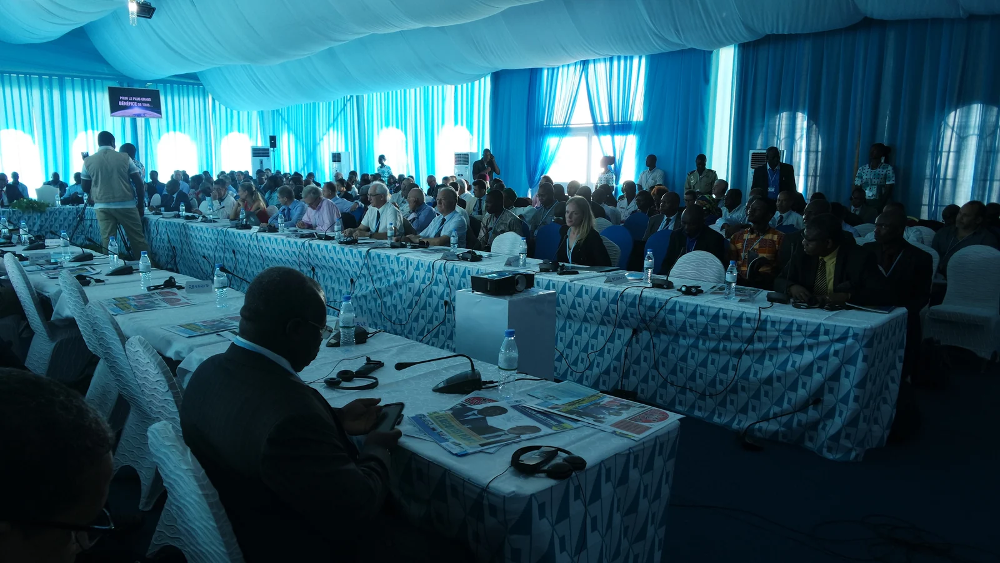
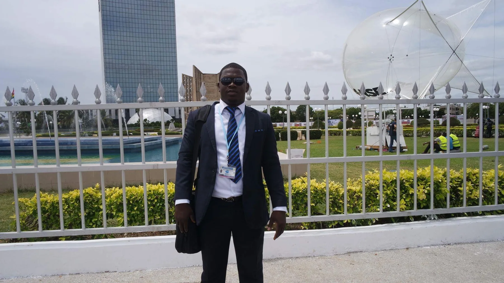
Participation à un événement institutionnel ivoirien consacré aux enjeux maritimes et à l'action publique en mer.
Participation à une rencontre régionale du Club Aménagement & Biodiversité de l’Agence régionale pour la biodiversité et l’environnement de la Région Sud, consacrée aux solutions fondées sur la nature. La rencontre réunit collectivités, aménageurs et acteurs de l’environnement autour de la place que ces solutions occupent, en pratique, dans les projets d’aménagement et l’adaptation des territoires.
L’ARBE Région Sud anime des clubs thématiques qui réunissent collectivités, aménageurs et acteurs de l’environnement. Les solutions fondées sur la nature y sont abordées comme alternative ou complément aux réponses techniques classiques en matière d’adaptation des territoires.
La participation porte sur la rencontre régionale du club.
Cette rencontre a permis de suivre la traduction opérationnelle des solutions fondées sur la nature dans des projets d’aménagement réels, et de relier une lecture juridique de l’adaptation territoriale aux contraintes concrètes des collectivités qui la mettent en œuvre.
Thématiques associées : biodiversité · aménagement du territoire · solutions fondées sur la nature · adaptation territoriale
Sources officielles : Rencontre régionale de l’ARBE Région Sud
Participation à un cadre de réflexion sur la protection de l'environnement méditerranéen et les vulnérabilités littorales.

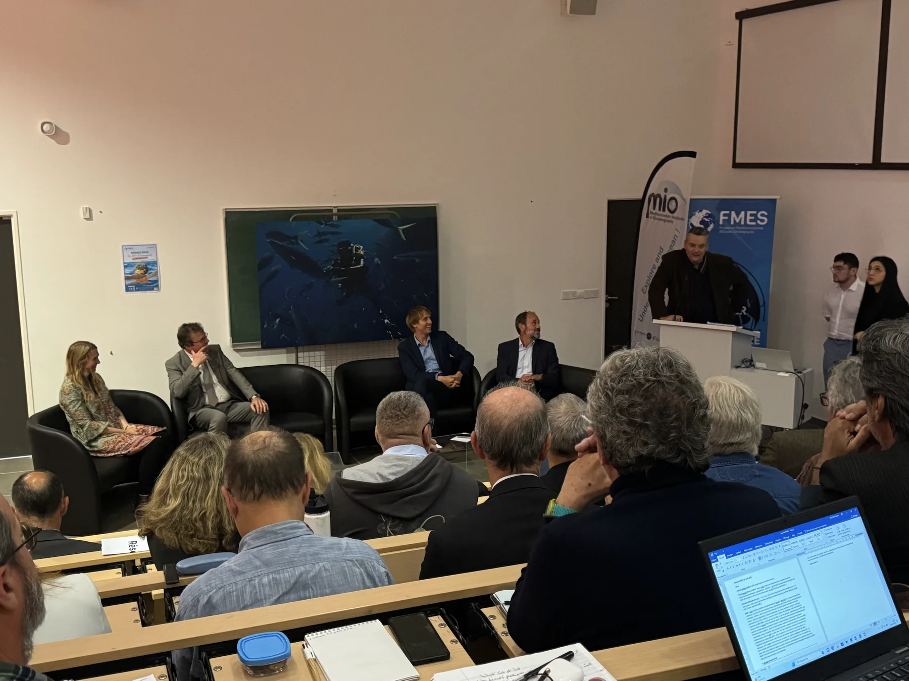
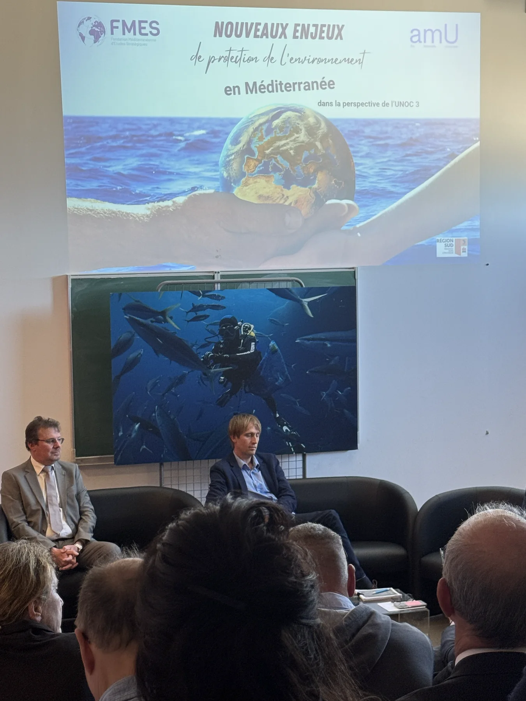
Participation à l’école d’été de l’Institut des sciences de l’Océan consacrée aux plastiques et polluants en mer, du 17 au 21 juin 2024. Cette formation intensive d’une semaine relie la connaissance scientifique des pollutions marines et les moyens d’agir.
Les écoles d’été de l’Institut des sciences de l’Océan réunissent pendant une semaine des participants d’origines disciplinaires différentes autour d’un objet océanique unique, avec cours, travaux pratiques et temps de terrain.
La participation porte sur la semaine complète de la session.
Cette semaine a permis de relier la mesure scientifique des pollutions plastiques aux leviers d’action possibles : comprendre comment les polluants sont identifiés et quantifiés en mer, et rapporter ces données aux cadres réglementaires et aux décisions publiques qui en dépendent.
Thématiques associées : pollutions marines · plastiques · environnement marin · interdisciplinarité · économie bleue
Sources officielles : École d’été 2024 de l’Institut des sciences de l’Océan
Participation à l’École d’été Océan 2026 consacrée aux pollutions plastiques dans l’environnement marin, organisée par l’Institut des Sciences de l’Océan d’Aix-Marseille Université du 1er au 5 juin 2026. La semaine associait cours, travaux pratiques, sortie de terrain et approches interdisciplinaires autour des méthodes de mesure, des enjeux réglementaires et des moyens d’action.
L’édition 2026 de l’École d’été Océan a réuni cours, travaux pratiques, sortie de terrain et approches interdisciplinaires autour des méthodes de mesure des pollutions plastiques, des enjeux réglementaires associés et des moyens d’action mobilisables.
La participation porte sur la semaine complète de la session, sortie de terrain comprise.
Cette semaine a permis de pratiquer les méthodes de mesure des pollutions plastiques en environnement marin, d’en éprouver les limites sur le terrain, et de rapporter ces résultats aux cadres réglementaires qui encadrent aujourd’hui les plastiques — c’est-à-dire de faire tenir ensemble la donnée scientifique et la norme.
Thématiques associées : pollutions plastiques · environnement marin · méthodes de mesure · réglementation · interdisciplinarité
Sources officielles : École d’été Océan 2026


Participation à un espace institutionnel sur le mouillage, les usages maritimes et la protection des milieux.
Participation à la journée d’étude de l’axe 2 du projet PROTEUS, consacrée aux chemins de transition pour une Méditerranée durable et résiliente à l’horizon 2050. La participation s’inscrit dans des activités documentées auprès du projet : réunions de travail, échanges avec le Plan Bleu et production d’un compte rendu.
PROTEUS est un projet de recherche interdisciplinaire consacré aux transitions méditerranéennes, qui associe droit, géographie, sciences politiques et prospective. Sa journée d’étude d’axe 2 portait sur les trajectoires possibles d’une Méditerranée durable et résiliente à l’horizon 2050.
Les activités documentées auprès du projet comprennent des réunions de travail, des échanges avec le Plan Bleu et la production d’un compte rendu. Elles ne constituent ni un statut de membre de l’équipe, ni un rôle institutionnel dans le projet.
Ces travaux ont permis de mettre en dialogue droit, géographie et prospective sur un même objet : construire des scénarios de transition à long terme pour un bassin maritime, confronter des méthodes disciplinaires distinctes, et restituer par écrit les échanges d’une séquence de recherche collective.
Thématiques associées : prospective · transitions méditerranéennes · résilience · interdisciplinarité · littoral
Sources officielles : Journée d’étude PROTEUS (MESOPOLHIS)
Entretien publié le 20 août 2024 sur le carnet de recherche du projet PROTEUS. La trajectoire y est restituée par le projet lui-même : articulation entre droit, mer, géographie, littoral, prospective et gestion des territoires, et contribution aux travaux menés.
Le carnet de recherche de PROTEUS publie les travaux et les rencontres du projet. La série « Rencontre avec l’équipe de recherche » présente les personnes qui y contribuent et la façon dont leur parcours rejoint l’objet du projet.
L’entretien est une source publique et vérifiable, publiée par le projet et non par ce site : il constitue une restitution par un tiers.
Cet entretien a permis de restituer publiquement, dans un cadre scientifique, la manière dont un parcours juridique rejoint des questions de géographie littorale : aires marines protégées, conflits d’usage, scénarios méditerranéens et communication de la recherche.
Thématiques associées : aires marines protégées · conflits d’usage · prospective méditerranéenne · communication de la recherche
Sources officielles : Entretien publié sur le carnet PROTEUS
Participation à l’atelier régional d’échange d’expériences organisé par MedPAN les 15 et 16 avril 2024 sur le tourisme dans les aires marines protégées, entre La Londe-les-Maures et l’île de Porquerolles, dans le périmètre du Parc national de Port-Cros.
MedPAN est le réseau des gestionnaires d’aires marines protégées de Méditerranée. Ses ateliers régionaux réunissent les équipes de terrain de plusieurs pays riverains pour confronter leurs pratiques sur un même sujet — ici, la pression touristique et la gestion des usages en aire marine protégée.
La participation porte sur les deux journées de l’atelier et s’est accompagnée d’un terrain sur Porquerolles. Elle ne comporte ni fonction ni mandat au sein du réseau.
Ces deux jours ont permis de confronter des questions de droit et de gouvernance du littoral aux retours d’expérience de gestionnaires méditerranéens : comprendre comment se règle concrètement la fréquentation touristique d’une aire marine protégée, quels arbitrages d’usage s’y jouent, et observer sur le terrain, à Porquerolles, ce que ces arbitrages produisent.
Thématiques associées : aires marines protégées · tourisme et usages littoraux · gouvernance du littoral · Méditerranée
Sources officielles : Atelier régional MedPAN
Participation à un espace SHS sur la prospective, les imaginaires et les transitions territoriales.
Participation à un dialogue académique sur l'économie bleue durable et les usages de la Méditerranée.
Participation à une réflexion juridique sur compensation écologique, environnement et territoires.
Participation à l’atelier national consacré à l’identification du projet d’investissement de résilience des zones côtières de la Côte d’Ivoire, tenu à la Banque mondiale à Abidjan le 24 mars 2017 dans le cadre du programme WACA. À la suite de la rencontre, un compte rendu demandé de l’atelier a été produit et transmis.
Le programme WACA — West Africa Coastal Areas — accompagne les États du littoral ouest-africain face à l’érosion côtière, aux inondations et à la pollution. L’atelier du 24 mars 2017 constituait la séquence nationale d’identification du projet d’investissement ivoirien : définir le périmètre, les priorités et les acteurs avant la phase de préparation.
La participation à cette séquence s’est accompagnée d’une prise de vues de l’atelier, puis de la rédaction du compte rendu, produit et transmis après la rencontre.
L’atelier a permis d’observer de l’intérieur comment un projet d’investissement de résilience côtière se construit à l’échelle nationale : quels acteurs sont réunis, quelles priorités sont arbitrées, quelles vulnérabilités du littoral sont retenues. Le compte rendu produit à la suite de la rencontre a demandé de restituer par écrit, de façon exploitable, une séquence de travail institutionnelle.
Thématiques associées : résilience côtière · littoral · érosion côtière · financement du développement · Côte d’Ivoire

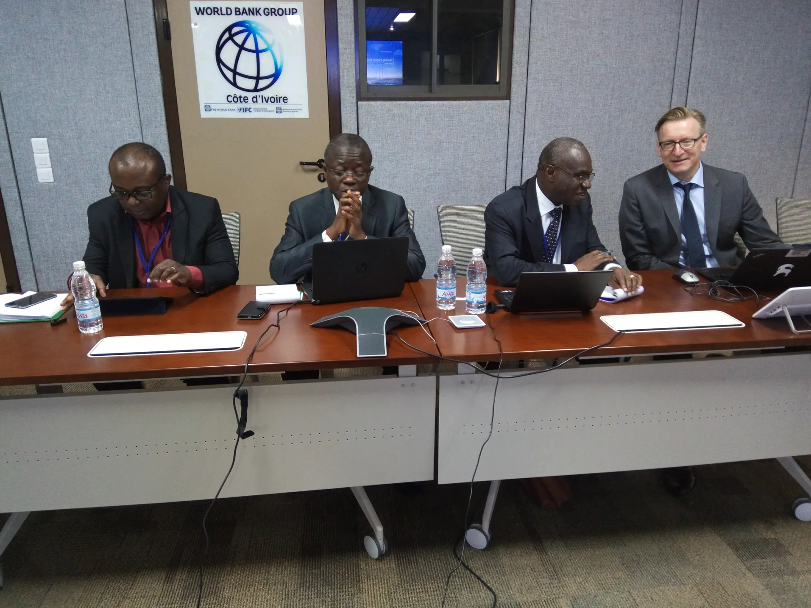
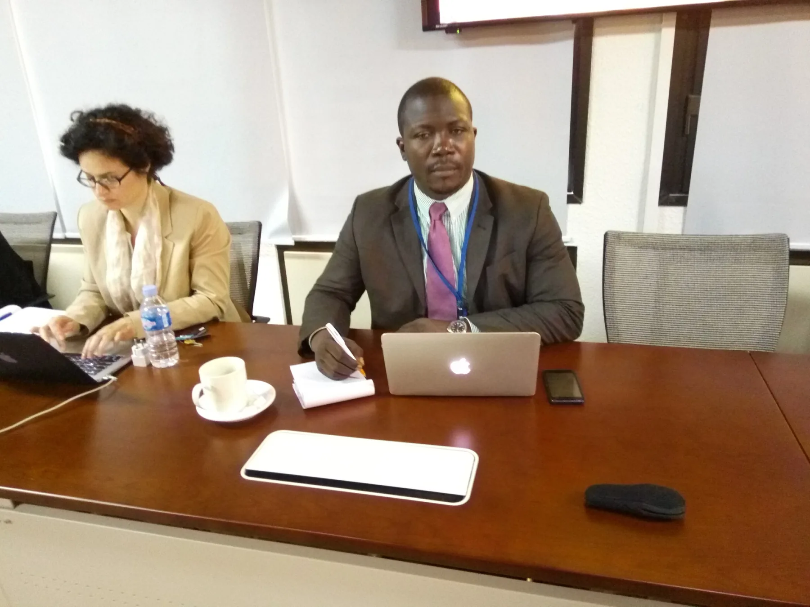
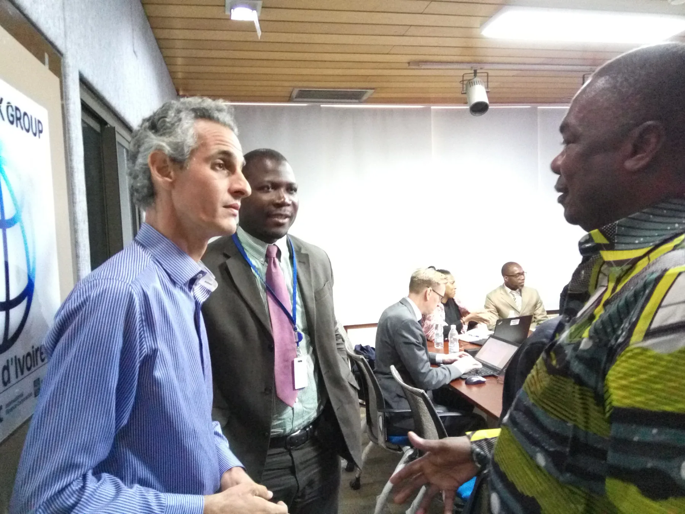
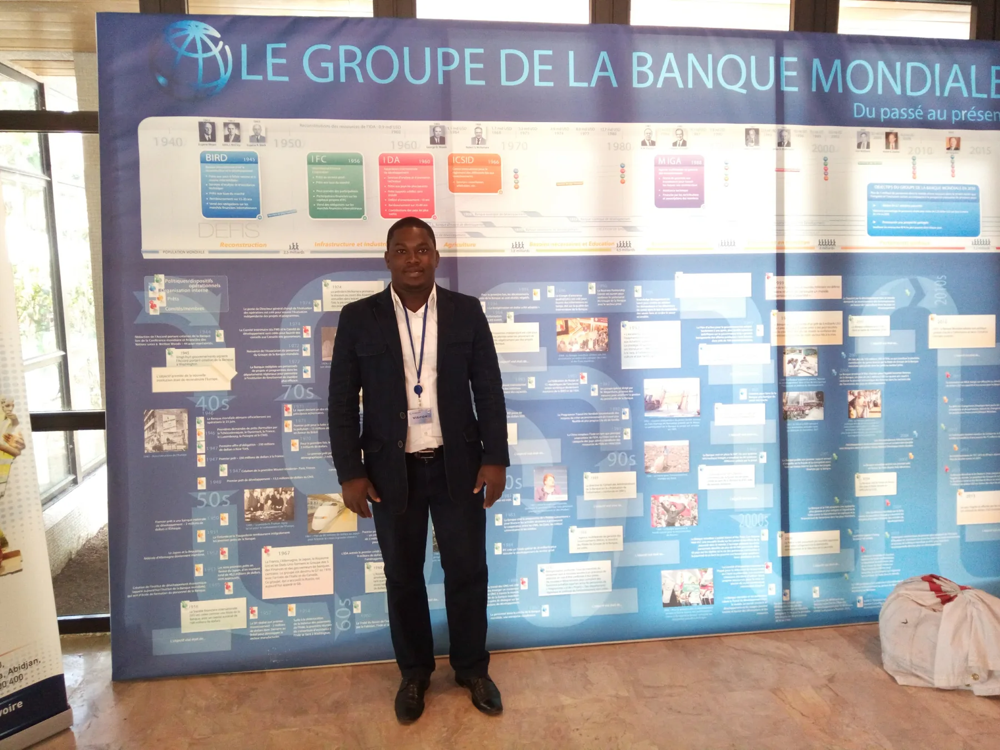
Participation à un panel associant environnement, océan et sensibilisation aux enjeux littoraux.
Participation accréditée à la vingt-quatrième Conférence des Parties à la convention-cadre des Nations unies sur les changements climatiques et à la quatorzième Conférence de la jeunesse qui la précède, à Katowice. C’est la seule sortie du cadre strictement maritime de ce parcours.
La COP24 de Katowice a été la conférence d’adoption du recueil de règles d’application de l’accord de Paris. La COY, conférence de la jeunesse, se tient dans les jours qui la précèdent et rassemble des délégations de jeunes venues préparer leurs positions.
L’accréditation à la conférence a été demandée puis accordée ; douze photographies documentent la séquence.
Cette conférence a permis d’observer une négociation climatique multilatérale et les mobilisations qui l’entourent depuis un parcours déjà orienté vers le littoral et l’environnement : mesurer comment les vulnérabilités côtières apparaissent — ou non — dans un agenda climatique global, et comment la jeunesse s’y organise comme acteur distinct.
Thématiques associées : gouvernance climatique · littoral · vulnérabilités côtières · jeunesse · coopération internationale

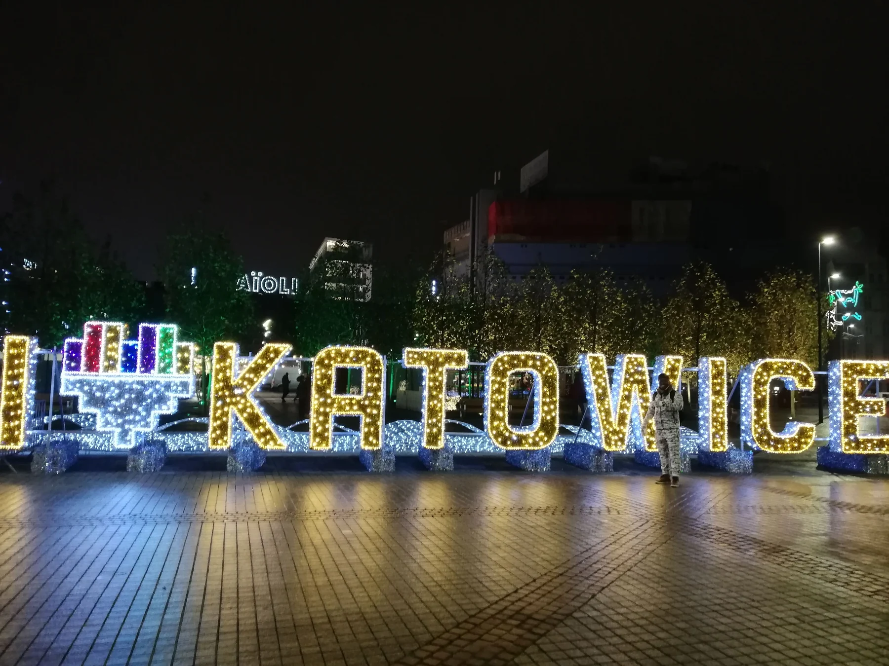
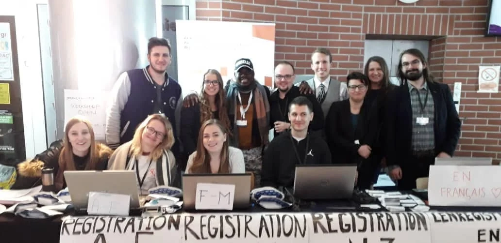
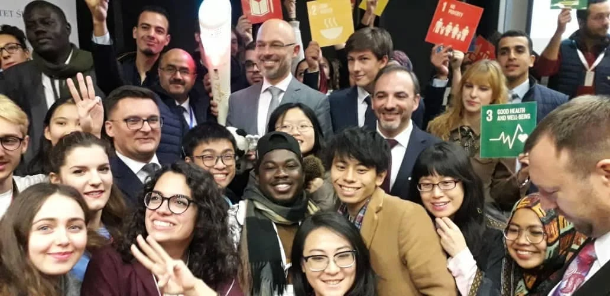
Participation à un séminaire reliant sécurité maritime, économie bleue et Golfe de Guinée.
Participation à un échange sur les liens entre sécurisation des océans, coopération et économie bleue.
Participation au salon Euromaritime / Blue Growth Exhibition à Marseille, du 28 au 30 juin 2022. Ce salon professionnel réunit les filières maritimes européennes autour des technologies, des ports et de la décarbonation du transport maritime.
Euromaritime est le principal salon professionnel de l’économie maritime en France. L’édition marseillaise de 2022 portait notamment sur la décarbonation des navires, les technologies portuaires et les filières de la croissance bleue.
La participation au salon ne comporte ni intervention, ni exposition, ni stand ; six photographies documentent la séquence.
Ce salon a permis de mettre les cadres juridiques travaillés jusque-là au contact des filières qui les subissent ou les anticipent : voir quelles technologies portuaires et quelles solutions de décarbonation sont réellement proposées aux armateurs et aux ports, et à quelles contraintes économiques la norme environnementale se heurte.
Thématiques associées : économie bleue · décarbonation du transport maritime · filières portuaires · innovation maritime
Sources officielles : Ministère chargé de la Mer

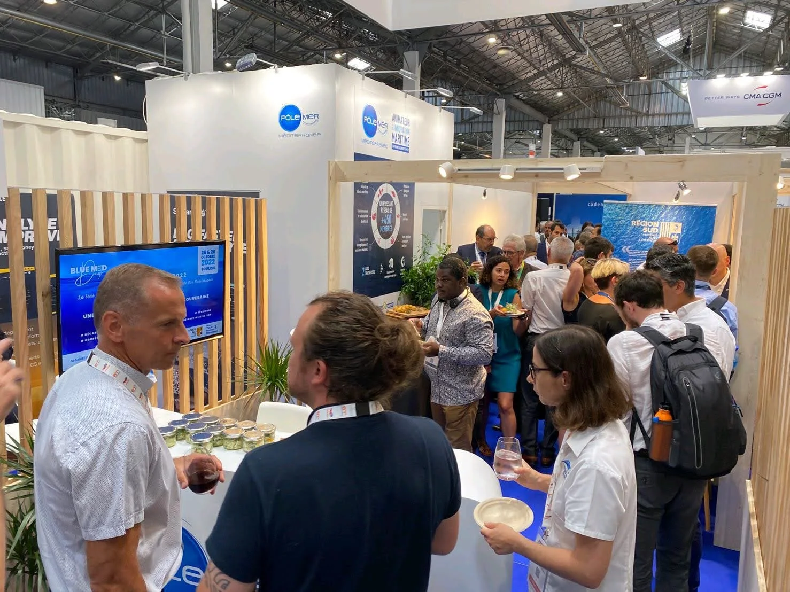
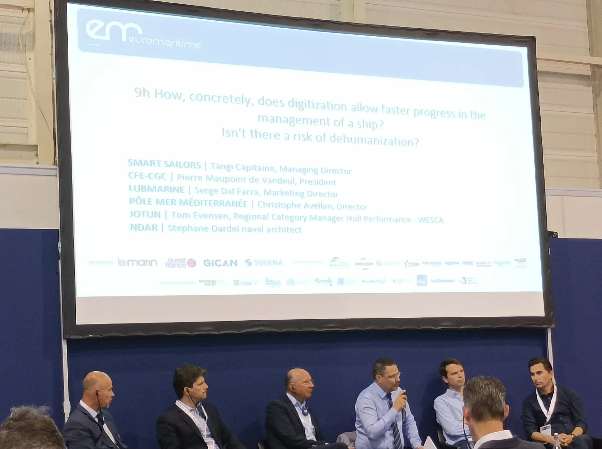
Participation à la première édition des Rencontres de l’Économie Bleue, le 19 janvier 2026, qui a réuni recherche, acteurs économiques, institutions publiques et monde maritime autour de la durabilité et du développement de liens intersectoriels au service de l’économie de la mer.
Les Rencontres de l’Économie Bleue ont été conçues par l’Institut des Sciences de l’Océan comme un point de contact entre laboratoires et acteurs économiques du littoral, sur le constat que la recherche marine et les filières maritimes se croisent peu.
La participation porte sur la journée du 19 janvier 2026 et s’est prolongée par des échanges de suivi.
Cette journée a permis de confronter une lecture juridique et institutionnelle de l’économie bleue aux besoins exprimés par des entreprises et des laboratoires, et d’identifier les points où une compétence en droit de la mer et en gouvernance littorale rejoint concrètement un projet économique.
Thématiques associées : économie bleue · interdisciplinarité · recherche et entreprises · Méditerranée
Sources officielles : Rencontres de l’Économie Bleue
Participation aux trois jours d’INNOV’ACTIONS sur le campus de Gardanne de Mines Saint-Étienne. L’événement place des équipes en travail de projet intensif, de la formulation d’un besoin jusqu’à la présentation d’une solution devant l’écosystème d’accompagnement.
INNOV’ACTIONS est un format de travail entrepreneurial court : trois jours pendant lesquels une équipe construit et fait mûrir une solution, avec l’appui de mentors et de structures d’accompagnement, et la restitue lors d’une séquence finale.
La présence couvre les trois jours. La contribution au travail d’équipe a été saluée par les organisateurs, et le projet a été présenté lors de la séquence finale.
Les trois jours d’INNOV’ACTIONS ont placé le projet dans un format de travail entrepreneurial intensif : construire et faire mûrir une solution en équipe, la confronter à l’écosystème d’accompagnement, et la présenter lors de la séquence finale.
Thématiques associées : innovation · travail en mode projet · entrepreneuriat académique · présentation de projet
Participation à un espace Afrique-Europe consacré à l'innovation, aux écosystèmes entrepreneuriaux et aux transitions.
Présentation de l’initiative AquaLab Equipment dans le cadre d’Alter Méditerranée / Téthys, espace consacré à l’innovation et aux coopérations méditerranéennes autour de l’économie de la mer. AquaLab est une initiative distincte, qui conserve son cadre et son autonomie propres : cette trace relève du parcours personnel de OUAGA Bokoua Yao et non d’une offre portée par ce site.
Alter Méditerranée / Téthys réunit des porteurs de projets et des acteurs de la coopération méditerranéenne autour de l’innovation et de l’économie de la mer.
La présentation d’AquaLab Equipment y a eu lieu ; elle relève du parcours personnel de OUAGA Bokoua Yao et non d’une offre portée par ce site. Le site OBY n’est pas l’organe de communication d’AquaLab et n’en porte pas le discours commercial.
Cette séquence a permis de présenter une initiative entrepreneuriale liée à l’équipement marin devant un public méditerranéen d’innovation, et d’en éprouver la formulation face à des interlocuteurs extérieurs au champ juridique.
Thématiques associées : économie bleue · innovation · Méditerranée · entrepreneuriat
Participation à un cadre d'échanges entre étudiants entrepreneurs, accompagnement et structuration de projets.
Participation au webinaire-atelier du réseau Pépite consacré au financement participatif : mécanismes du crowdfunding, choix d’une plateforme, construction d’une campagne et mobilisation d’une communauté autour d’un projet. Le format associe une séquence de cadrage et un atelier d’application destiné aux porteurs de projet en phase d’amorçage.
Le réseau Pépite accompagne les étudiants entrepreneurs. Ce format associe un webinaire de cadrage et un atelier d’application sur le financement participatif, l’un des leviers de financement accessibles à un projet en phase d’amorçage.
La participation porte sur le webinaire et sur l’atelier d’application qui l’accompagne.
Cette séance a permis d’acquérir un cadre pratique pour structurer une campagne de financement participatif : identifier les plateformes et leurs règles, construire un plan de mobilisation d’une communauté et préparer le lancement d’une campagne. Aucune campagne n’a été lancée à cette occasion.
Thématiques associées : financement participatif · amorçage · entrepreneuriat académique
Sources officielles : Webinaire du réseau Pépite · atelier associé
Webinaire suivi sur propriété intellectuelle, protection des idées et parcours entrepreneurial.
Participation à un forum universitaire consacré à l'entrepreneuriat étudiant et aux projets à impact.
Participation à un espace Pépite consacré aux parcours de recherche, d'innovation et de projet.
Participation à un échange entre acteurs juridiques et entrepreneurs autour des besoins d'accompagnement.
Participation au dispositif Pass Entreprendre de la Chambre de commerce et d’industrie Aix-Marseille-Provence, consacré à la structuration d’un projet entrepreneurial : cadrage du modèle, examen de la faisabilité et orientation vers les appuis mobilisables. Le dispositif s’adresse aux porteurs de projet et ne suppose aucune création d’entreprise préalable.
Le Pass Entreprendre est un dispositif d’accompagnement de la CCI Aix-Marseille-Provence destiné aux porteurs de projet : cadrage du modèle, examen de la faisabilité et orientation vers les appuis disponibles.
La participation porte sur le parcours d’accompagnement proposé par la chambre consulaire.
Ce dispositif a permis de travailler concrètement la structuration d’un projet — modèle, faisabilité, étapes — et d’identifier les outils d’accompagnement mobilisables auprès d’une chambre consulaire. Aucune création d’entreprise n’a eu lieu à cette occasion.
Thématiques associées : entrepreneuriat · structuration de projet · accompagnement consulaire
Sources officielles : Pass Entreprendre — CCI Aix-Marseille-Provence
Participation à un meetup de Pépite Provence réunissant des étudiants entrepreneurs de la région autour de leurs projets, de leurs difficultés d’avancement et des appuis disponibles localement. Ces rencontres informelles sont ouvertes aux porteurs de projet accompagnés par le réseau et fonctionnent sur le retour d’expérience et la mise en relation.
Pépite Provence est le pôle étudiant pour l’innovation, le transfert et l’entrepreneuriat du site d’Aix-Marseille : il accompagne les étudiants et jeunes diplômés qui portent un projet, du premier cadrage jusqu’à l’amorçage. Ses meetups sont des temps d’échange informels entre porteurs de projet accompagnés par le réseau, ouverts aux retours d’expérience et aux mises en relation.
La participation porte sur la rencontre elle-même, sans rôle d’animation.
Cette rencontre a permis de confronter l’avancement d’un projet à celui d’autres porteurs au même stade, d’identifier des difficultés communes et d’élargir le réseau d’appui mobilisable localement.
Thématiques associées : entrepreneuriat académique · réseau · accompagnement de projet
Participation au webinaire « Avoir un impact durable grâce à son projet », consacré à la construction d’un projet à impact : définition de l’impact visé, mesure de ses effets sociaux et environnementaux, et conditions de sa pérennité.
Le webinaire portait sur la façon dont un projet entrepreneurial peut viser un impact social ou environnemental explicite, et sur les méthodes qui permettent d’en mesurer les effets plutôt que de les affirmer.
La participation porte sur la séance du webinaire.
Ce webinaire a permis de structurer la dimension d’impact d’un projet : formuler l’effet recherché, choisir des indicateurs de mesure sociale et environnementale, penser l’engagement des publics concernés et les conditions de pérennité du dispositif.
Thématiques associées : impact social et environnemental · mesure d’impact · entrepreneuriat à impact
Sources officielles : Page officielle du webinaire
Participation à un échange spécialisé sur les différends de délimitation maritime et leurs enjeux africains.
Participation à une conférence reliant propriété intellectuelle, espace OHADA et protection des droits.
Participation à un colloque consacré à l’évolution du droit des investissements et de l’arbitrage en Afrique : recomposition des traités d’investissement, place de l’arbitrage dans le règlement des différends économiques et adaptation des cadres juridiques africains.
Le droit des investissements en Afrique connaît une phase de révision : renégociation des traités bilatéraux, débats sur les mécanismes d’arbitrage entre investisseurs et États, et affirmation de cadres régionaux propres.
La participation porte sur le colloque, sans intervention.
Ce colloque a permis de relier deux champs habituellement traités séparément : le contentieux économique international et les cadres juridiques africains. Il a donné une lecture concrète de la manière dont l’arbitrage d’investissement est discuté, contesté et adapté sur le continent.
Thématiques associées : droit des investissements · arbitrage · règlement des différends · Afrique
Participation à la 40e séance des Palabres de la médiation agile, tenue le 19 avril 2024 et consacrée aux médiations administratives, c’est-à-dire au règlement amiable des différends entre les usagers et l’administration. La séance réunissait des praticiens de la médiation autour du cadre légal du recours amiable et des pratiques déployées dans ce champ.
Les Palabres de la médiation agile sont un rendez-vous périodique de praticiens de la médiation. La 40e séance portait spécifiquement sur les médiations administratives : différends avec une administration, cadre légal du recours amiable et pratiques des médiateurs intervenant dans ce champ.
La participation porte sur la séance du 19 avril 2024. Elle ne confère aucune qualité de médiateur exercée à cette occasion.
Cette séance a permis d’approfondir un champ précis de la médiation : comprendre comment le règlement amiable s’applique aux différends avec l’administration, quelles règles procédurales l’encadrent, et quelles pratiques les médiateurs y déploient.
Thématiques associées : médiation · médiation administrative · règlement amiable des différends · relations avec l’administration
Sources officielles : Chronologie des Palabres de la médiation agile